Ecualizador Activo de 3 Bandas
Proyecto profesional de diseño y construcción de un ecualizador activo analógico
con control independiente de frecuencias bajas, medias y altas
Componentes
TL072, LM3915, potenciómetros y resistencias de precisión
3 Bandas
Control independiente de bajos, medios y agudos
Activo
Amplificación y ecualización en una sola etapa
Diseños Técnicos y Esquemáticos
Diseño del PCB

Esquemático de Fuente
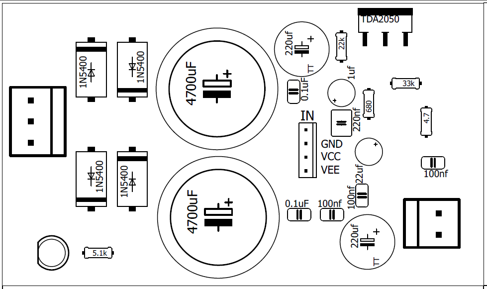
Diagramas de Conexión
Transformador Principal

Sistema Completo
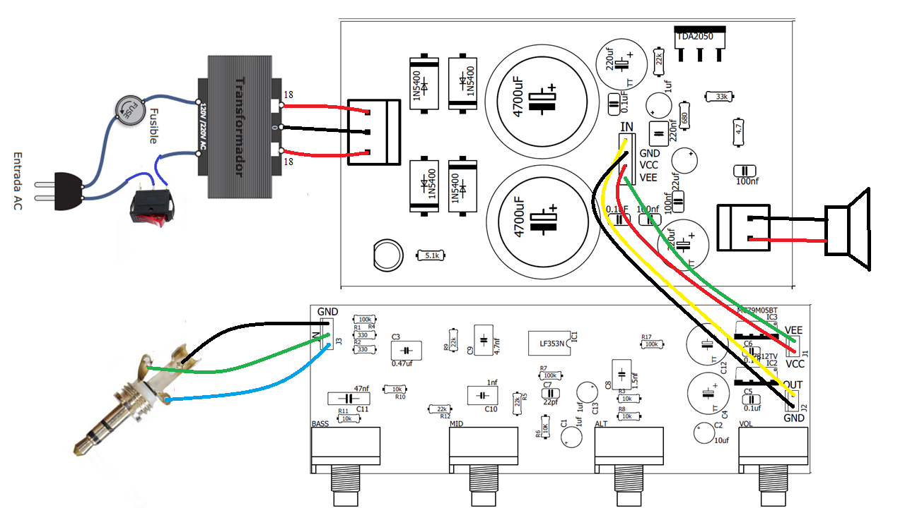
Controles de Audio
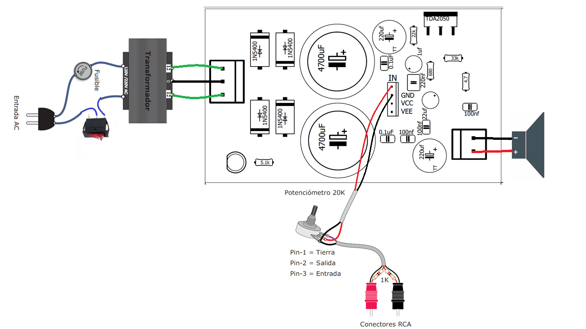
Detalle del Transformador

Potenciómetros y RCA
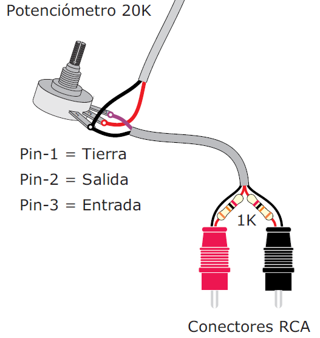
Proceso
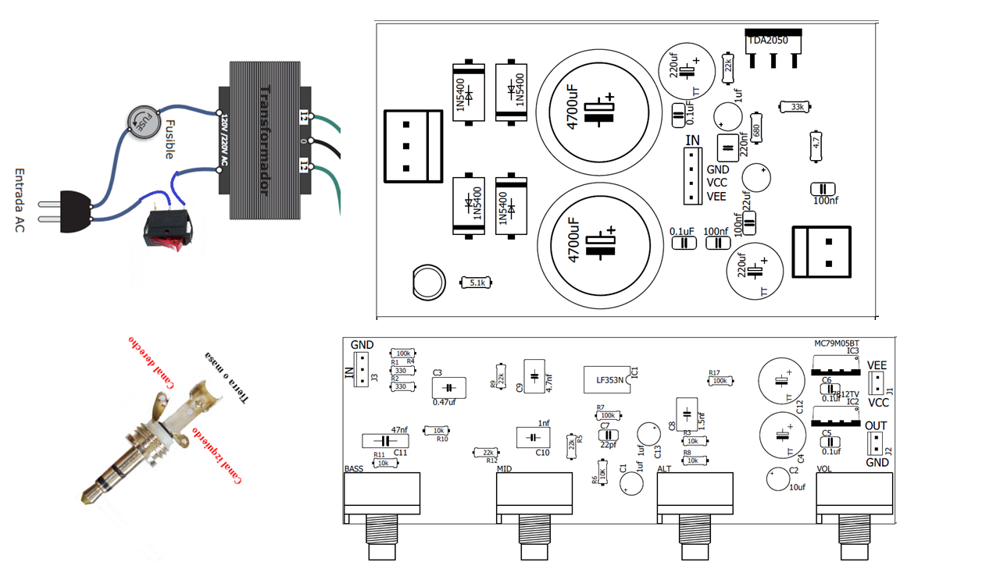
Proceso de Fabricación
Documentación completa del proceso de construcción paso a paso
1 Impresión de Máscaras
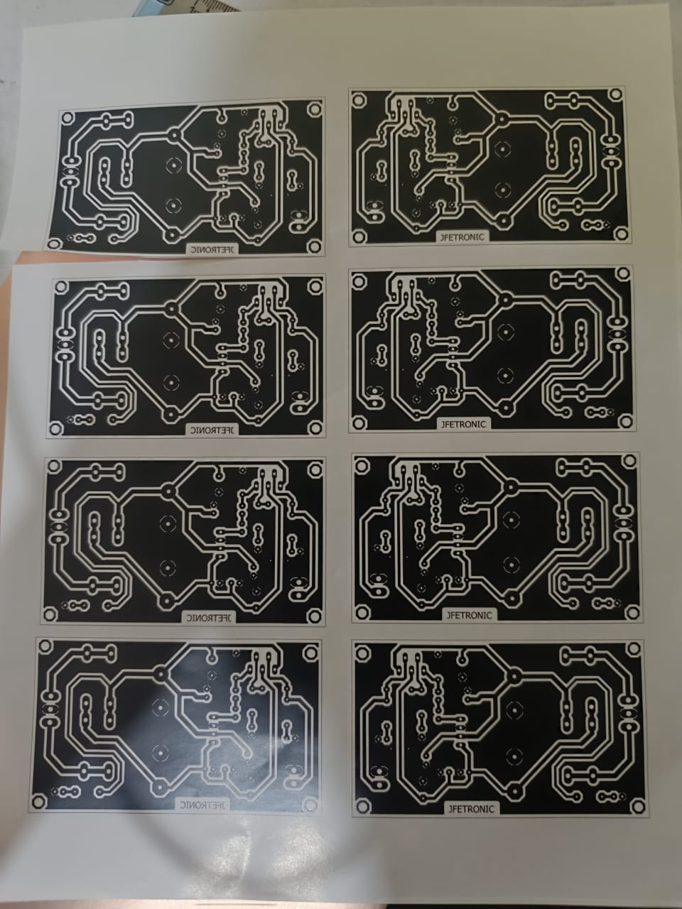
2 Preparación de la Placa de Cobre
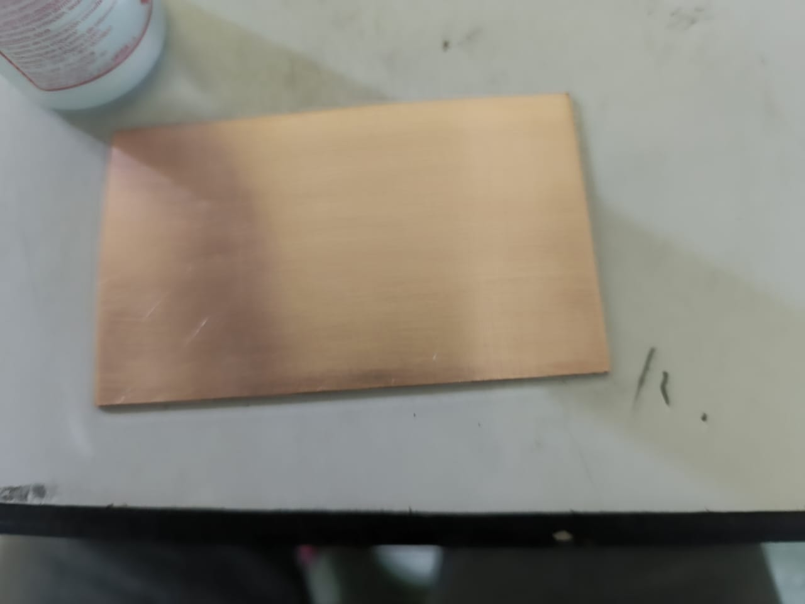
3 Transferencia Térmica
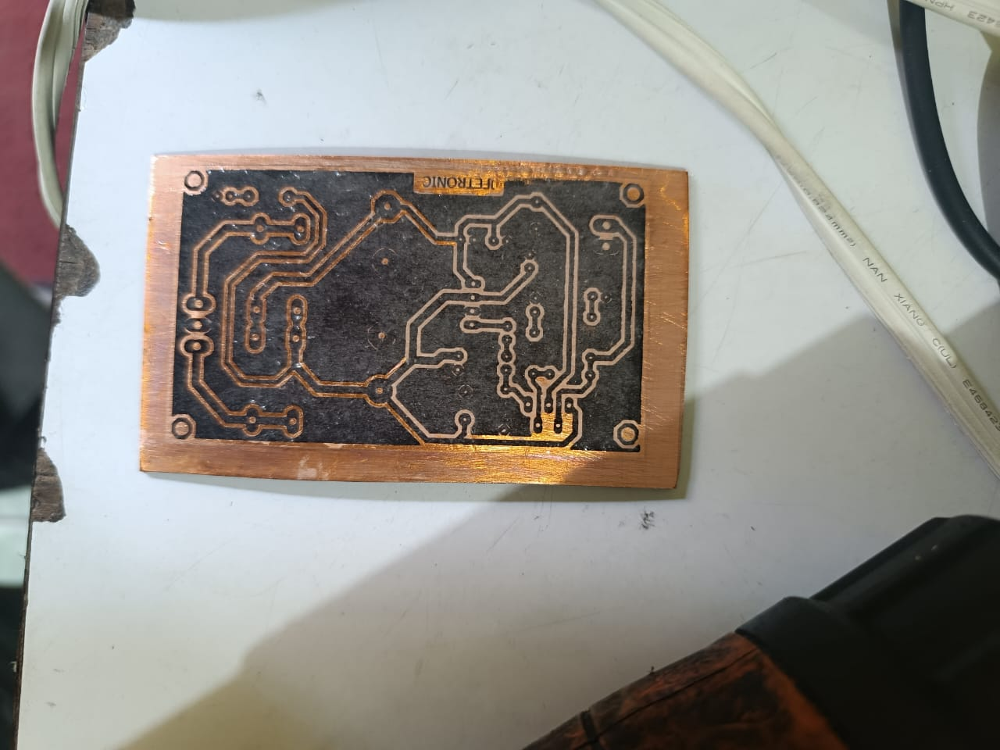
4 Revelado en Ácido
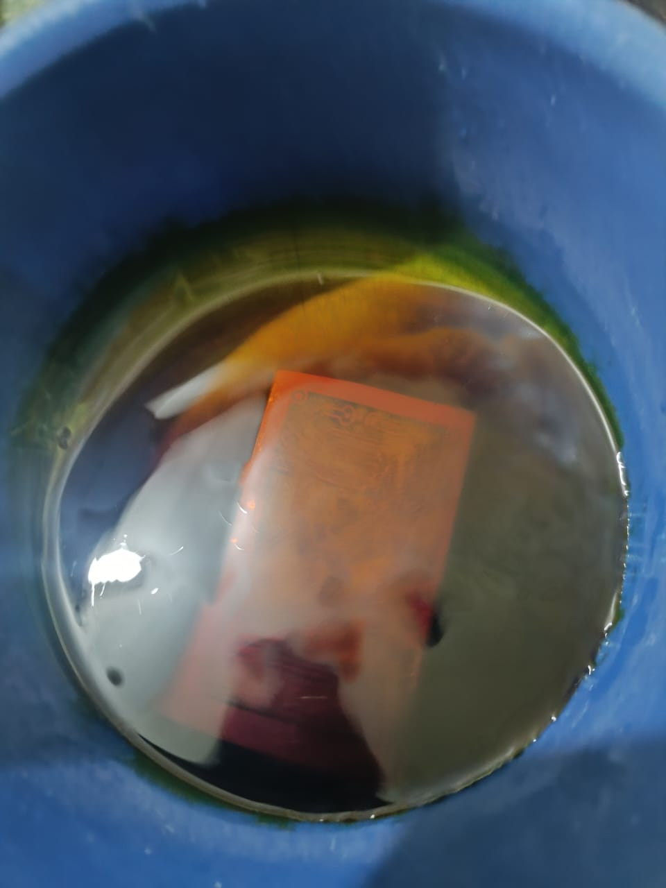
5 Perforado de la Placa
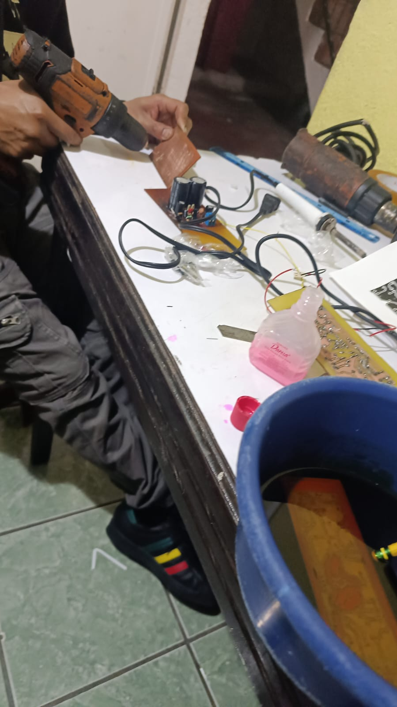
6 Soldadura de Componentes
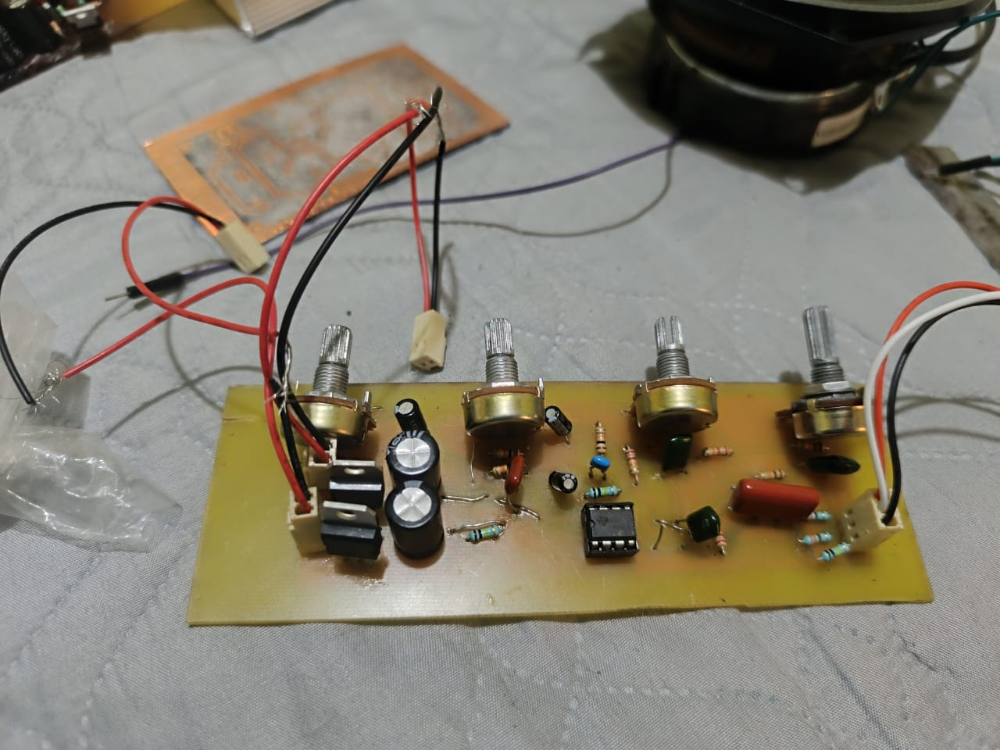
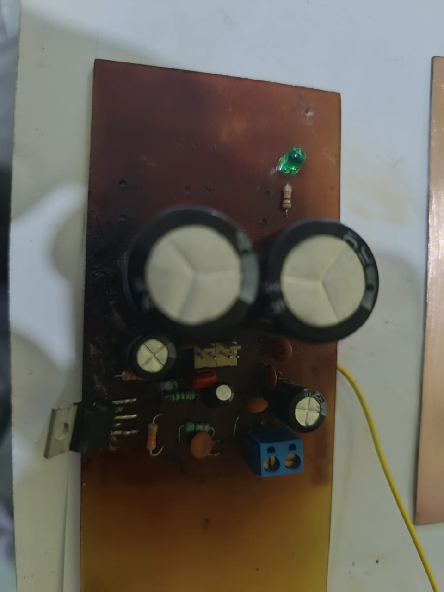
7 Ensamblaje del Ecualizador
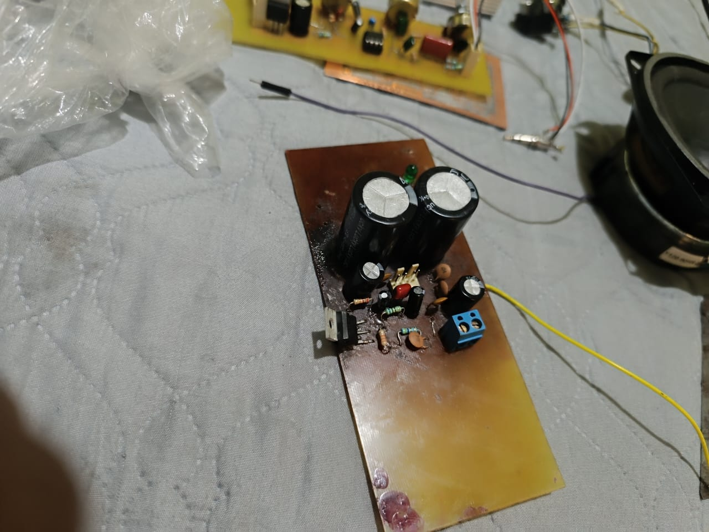
8 Conexión Eléctrica Final
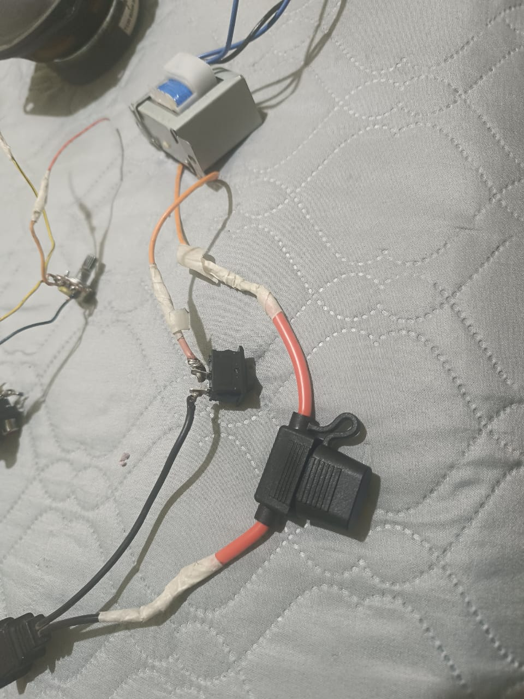
9 Pruebas del Sistema Completo
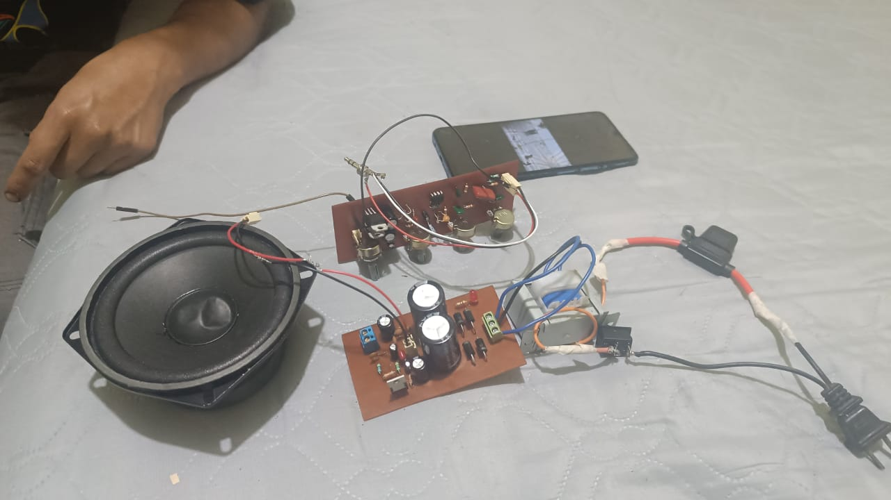